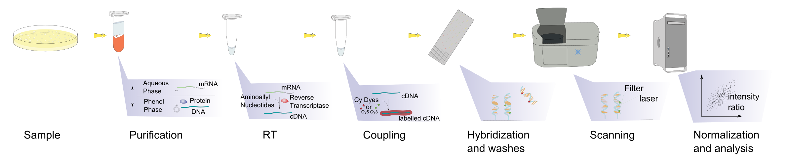

Transcriptomics Session 2
Microarray Technology
Two Colour Arrays

- Two colour microarrays were printed microscope slides
- Known probe sequences were printed to the surface in defined locations
- 60-75mer oligonucleotide probes
- Highly customisable by project
- Two samples per array
- Samples labelled with Cy5 (Red) or Cy3 (Green)
- Scanned at 570nm (Cy3) and 670nm (Cy5)
MA Plots

- Mean of Differences
\(M = \log_2(\frac{R}{G}) = \log_2(R) - \log_2(G)\) - Average Signal
\(A = \frac{1}{2}\log_2(RG) = \frac{\log_2(R) + \log_2(G)}{2}\)
- Assess bias within and between arrays
- Also to show DE genes
- Term “MA Plot” still used in RNA-Seq despite no connection to formula
Single Channel Arrays

Affymetrix Arrays became dominant
- Factory manufactured
Standardised layout for each organism
Single sample per array
- Only scanned at one frequency
\(\implies\) no dye bias
- Only scanned at one frequency
More genes/array
25mer probes targeting 3’ end of transcript
- Captured only intact transcripts
Single Channel Arrays

Other Array Types
- 3’ Arrays replaced by whole transcript (WT) arrays
- Exon/Gene Arrays
- Maximum of 4 probes/exon
- Multiple probes target missing exons
- Illumina Bead arrays
- 65-mer probes
- Used barcoded beads instead of set probe locations

Quantile Normalisation

- Need to summarise probes to a probeset
- Probes can be very noisy
- BG signal + inconsistent binding
- Individual arrays give different fluorescence distributions \(\implies\) technical noise
- Normalisation between arrays
Quantile Normalisation


- Now we have identical distributions of signal across all arrays
- Equivalent to having identical amounts of source material (mRNA)
- Reduces technical noise across dataset \(\implies\) more statistical power